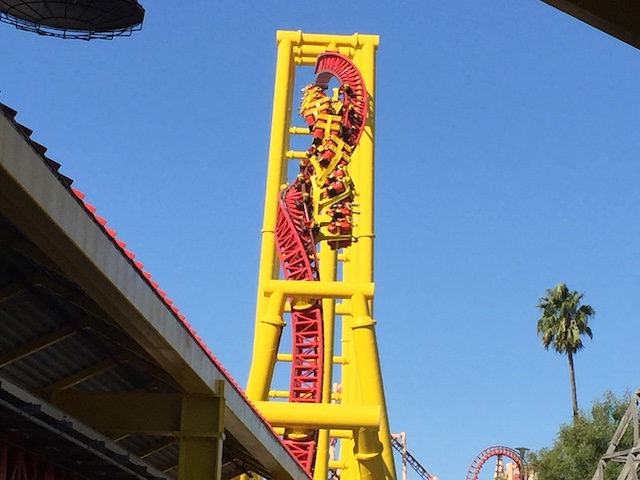
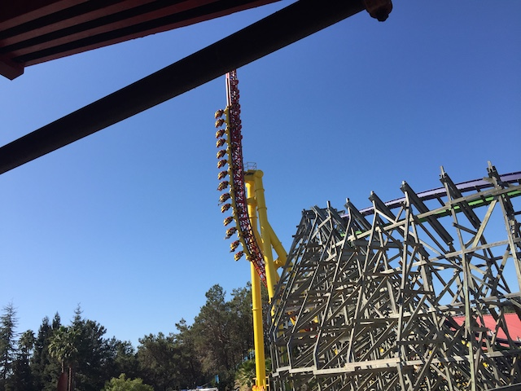
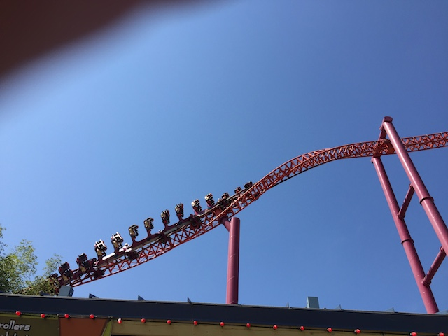
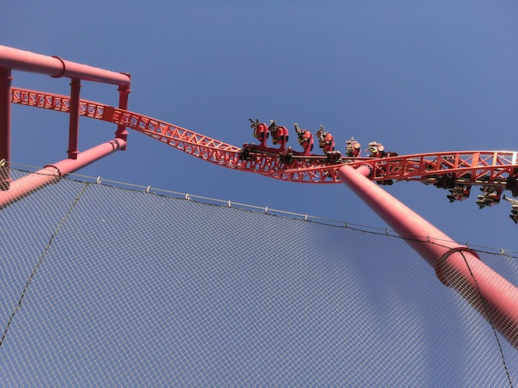
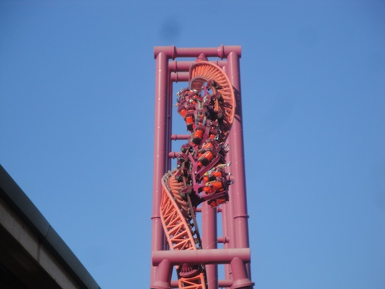
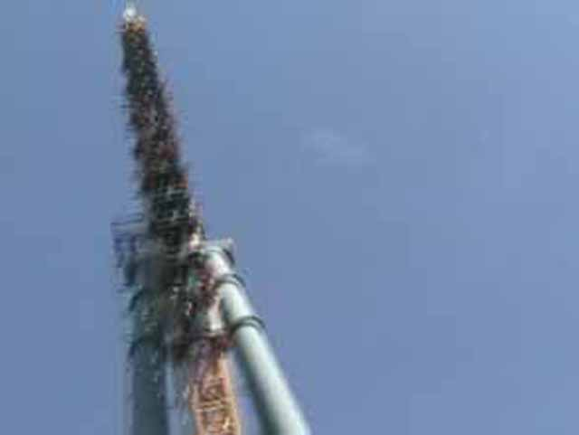

| |
The Flash: Vertical Velocity Review

Today, we'll be reviewing The Flash: Vertical Velocity @ Six Flags Discovory Kingdom (AKA, Nature's f*cked up Impuse Coaster). You get in the seat, pull down the shoulder restraints, and away we go! The first launch is pretty weak, but that's ok for now. Because now you'll pulling up towards the sky and going through an inline twist. And then, the beauty of this is stopping. You will stop when you are either upsidedown, or really close to upsidedown. I'm talking 167 degrees here. After that, you go out of the twist and back through the station and into the back spike. The back spike is a lot of fun and while it's small, it's still quite a lot of fun. Then you fall back down and FLY through the station. Then it's back up the first spike. But this time, you go completely through the inline twist and up into the track over the entrance. Then you fall back through the inline twist and back through the station (Oh BTW, the Inline Twist is an inversion whether you like it or not bitches!). Then you fly back into the station and into the back spike. Unfortunetly, on V2, there is no holding brake. Although I'm not the greatest holding brake fanatic in the world, I do wish Six Flags Discovory Kingdom would fix the holding brake as it definetly helps the ride. Then after that fall, we slown down through the station as we head back into the inline twist. As we get one last bit of hangtime, we must savor it as when we fall out of it, we fall back in the station. And it's not a flyby, I mean our ride is over. I'm actually glad Flash got redesigned as it is now a unique ride and quite original. I would totally recommend riding this if you're at Six Flags Discovory Kingdom.
8/10
Location: Six Flags Discovory Kingdom
Opened in 2001.
Remodeled in 2002.
Built by: Intamin
Last Ridden: November 3, 2019
The Flash: Vertical Velocity Photos












Home
|